Latest version : 1.061 (Download the latest version of the script)
Ce programme permet :
de lier les appels aux Figures, Tableaux et Appendices aux légendes correspondantes en une seule passe (appels complexes inclus) ;
de tester l'absence ou la présence des appels dans le texte, et de les surligner ;
d'insérer ou de supprimer des appels (en cas d'ajout ou de suppression de figure).
Pour installer le programme, le dossier téléchargé doit être copié dans le dossier « Scripts/Scripts Panel » d'InDesign. Renommer ensuite le dossier en "linkElement".
Le dossier contient les fichiers suivants :
linkElements.jsx Le programme de base ;
linkElements_UI.jsx L'interface graphique du programme ;
linkFigures&Tables-help.html Ce fichier d'aide, au format HTML ;
linkFigures&Tables-help.html_files Le dossier contenant les images du fichier d'aide.
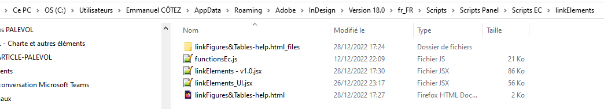
Pour lancer le programme :
ouvrir le fichier InDesign d'un article ;
double-cliquer sur le fichier « linkElements – vX.Y.jsx » ;
Le programme s'ouvre alors et lance automatiquement une analyse de l'article :
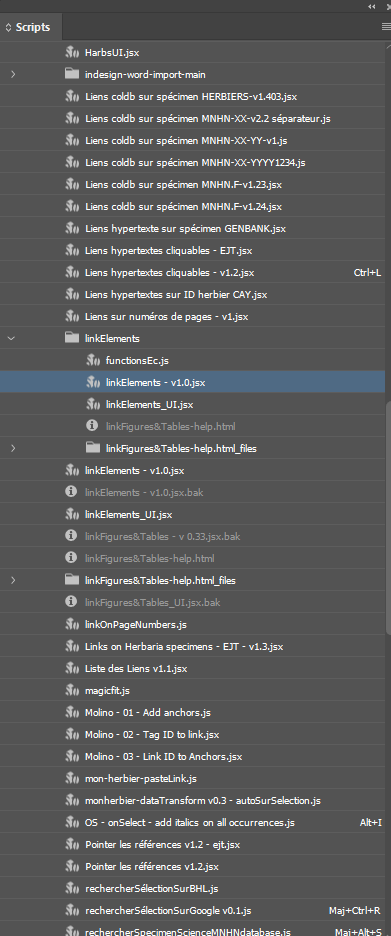
Une fois l’analyse terminée, le résultat s’affiche dans le bloc INFORMATIONS du programme :
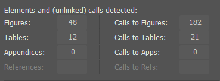
Attention : Les appels détectés pendant l’analyse correspondent aux appels non liés précédemment (le programme ne détecte donc que les appels non stylés).
L’interface du programme est uniquement en anglais. Les couleurs et les styles de caractères utilisés par le programme, si ils n’existent pas, sont automatiquement ajoutés à la palette des couleurs et/ou des styles.
Le bouton « Exit » permet de quitter le script (tout comme la croix rouge).
Le bouton « Help » renvoie vers cette page ; en plus des explications données ici, un survol des différents boutons de l’interface permet d’afficher une infobulle qui vous renseignera sur leur fonction.
Voici les différents blocs permettant d’interagir avec l’article :
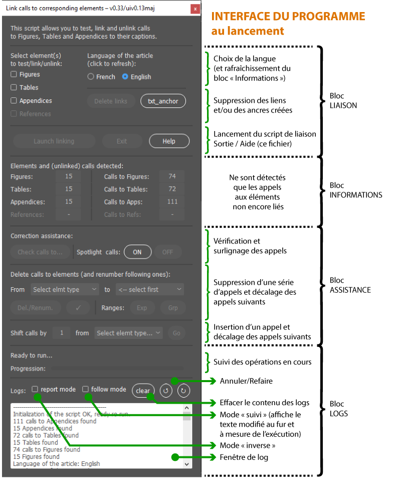
Pour activer les fonctionnalités proposées par le programme, il faut d’abord sélectionner un ou plusieurs type(s) d’éléments (« Figures », « Tables » ou « Appendices ») :
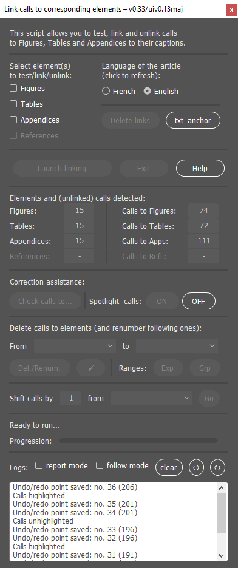
Remarque : certaines fonctionnalités ne peuvent être utilisées que sur un seul type d’élément à la fois (Figures OU Tables OU Appendices), d’autres sur plusieurs types d’éléments (Figures ET/OU Tables ET/OU Appendices) (voir capture précédente).
Par rapport à la liaison entre appels et légendes via les références croisées :
la liaison des appels aux éléments se fait en une seule passe, voire en une seule passe pour tous les types d’éléments ;
les appels complexes sont gérés (ex. : Figs 3 ; 4A-C, G ; 5-7 ; 12) ;
les appels ne sont pas modifiés lors de la renumérotation (les « Figs » ne deviennent pas des « Fig. » lors de la mise à jour des appels) ;
aucune limite de taille n’est imposée au niveau de l’article et/ou du nombre d’éléments à traiter (les liens hypertexte et les ancres ne ralentissent pas le fichier comme le font les références croisées) ;
des outils vous permettent de placer vos figures ou de vérifier les appels simplement, sans toucher au texte.
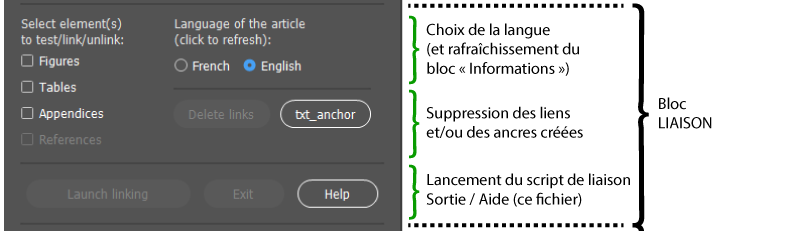
Ces deux boutons radio (« French » et « English ») correspondent à la langue de l’article (par défaut « English ») ;
Les éléments détectés et liés le seront uniquement dans la langue sélectionnée ;
Important : lors d’un clic sur l’un des boutons « French » ou « English », le programme met à jour les contenus et appels correspondant à la langue dans le bloc INFORMATIONS (cela peut prendre quelques secondes/minutes en fonction de la taille de l’article).
Remarque : si l’article est bilingue, le programme de liaison devra être exécuté deux fois : une première fois pour détecter les appels dans une langue (ex. : « Table »), une seconde fois pour les appels dans l’autre langue (ex. : « Tableau »).
Avant d’utiliser ce bloc, il est conseillé de vérifier la présence des appels dans le texte en utilisant le bloc « ASSISTANCE ».
Le bloc « Liaison » est dédié à l’ajout de liens hypertextes sur les appels détectés dans le texte vers le ou les type(s) d’élément(s) sélectionné(s).
Cette partie peut être lancée sur plusieurs éléments à la fois (par ex. « Figures » ET « Tables »).
Pour lier les appels à un type d’élément :
sélectionnez un ou plusieurs type(s) d’élément(s) (Figures, Tables ou Appendices) ;
cliquez sur « Launch linking ».
Le programme effectue alors les actions suivantes :
Ajout des ancres aux légendes des éléments sélectionnés :
les ancres sont créées uniquement si elles n’existent pas encore (voir ici pour nettoyer les ancres inutilisées) ;
le programme vous fait valider la création de chaque ancre :
la légende détectée est affichée à l’écran ;
une boîte de dialogue est ouverte, avec le numéro d’ancre proposé (Fig. 1, Fig. 2, etc.) ;
si le numéro est correct, appuyer sur « OK » ;
s’il est incorrect, le corriger (taper uniquement le nombre, sans « Fig. » ou « Table » ou « Appendix » devant) et cliquer sur « OK ».
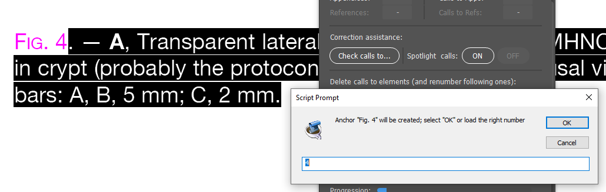
Recherche des appels dans le texte et ajout de liens hypertextes vers les ancres précédemment créées :
les appels liés sont passés en style « Appel de figure » et apparaissent en rose (si le style n’existe pas, il est automatiquement créé) ;
les appels en échec (non liés) ne sont pas stylés et apparaissent surlignés en bleu :
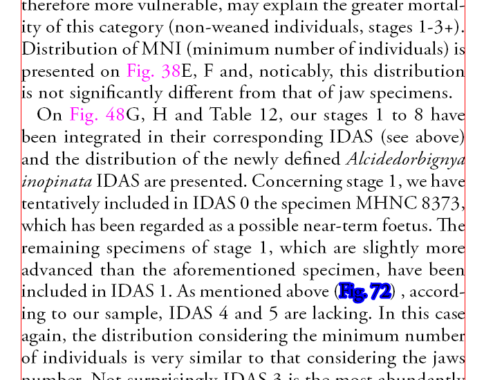
à la fin, le programme affiche le nombre de liens créés et le nombre d’appels en erreur :
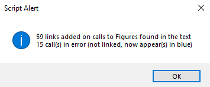
Remarques : le programme lie les appels complexes (ex. : Figs 1A, C; 3B; 5). Les appels présents uniquement à l’intérieur d’une plage (ex. : la Fig. 14 à l’intérieur de l’appel aux Figs 13-15) ne sont pas liés (pour lier ces appels, utiliser d’abord la fonction « Expand ranges »).
Si vous avez besoin de supprimer les liens créés, il faut utiliser la fonction « Delete links » et le bouton correspondant. Pour cela :
sélectionnez un ou plusieurs type(s) d’éléments (Figures, Tables ou Appendices) ;
cliquez sur le bouton « Delete links » :
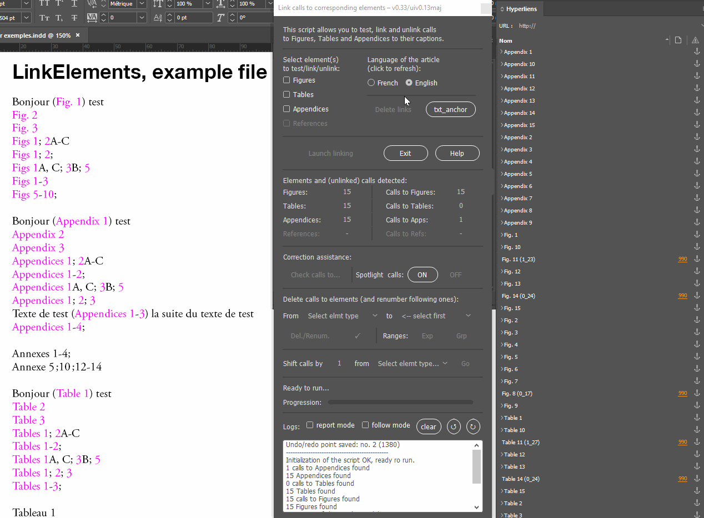
Si le programme de liaison a été passé plusieurs fois sur l’article, des ancres surnuméraires (repérables de multiples signes « : » rouges au début de la légende) peuvent avoir été créées :
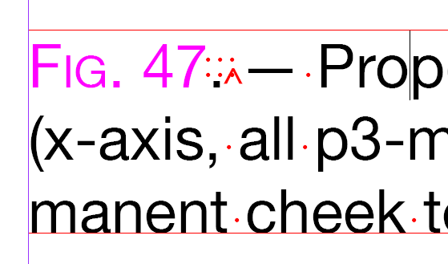
Pour les supprimer :
lancez le script « text_anchor.jsx » ;
cliquez sur le bouton « select unused » ;
cliquez sur le bouton « delete selected » :
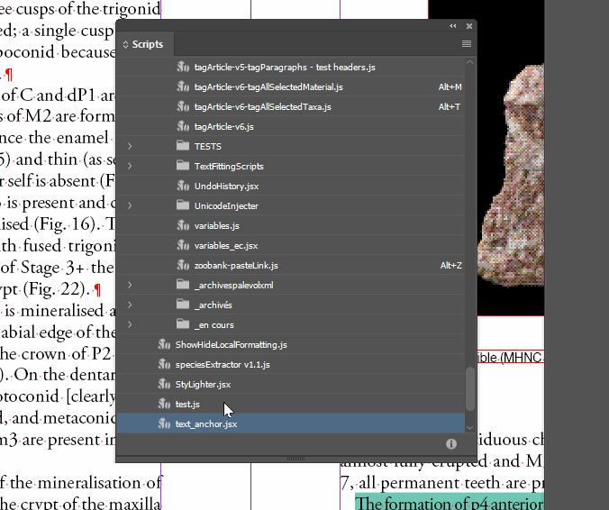
Remarque :
Si les liens sur les appels ont été supprimés (en utilisant la fonction « delete links »), les ancres correspondantes (de type « Fig. 1 » ou « Table 1 » par exemple) seront également supprimées ;
Si les liens sur les appels ont déjà été créés, seules les ancres nommées « Ancrage XX » et inutilisées seront supprimées.
Ce bloc affiche les informations sur les Figures, Tableaux et Annexes détectés dans l’article et sur leurs appels détectés dans le texte :
Les éléments (Figures, Tables ou Appendices) sont détectés en fonction du style de paragraphe de leurs légendes (style de paragraphe recherché : « Légende figure ») ;
Les appels aux Figures, Tables et Appendices sont détectés en fonction de la langue sélectionnée (par défaut, « English ») ;
Les appels complexes (ex. : Figs 1A, C; 3B; 5) sont également pris en compte, mais pas les plages (un appel aux Figs 13-20 ne compte que pour 2 appels dans le total affiché) ;
Les références bibliographiques ne sont, pour l’instant (v1.00), pas traitées par le script.
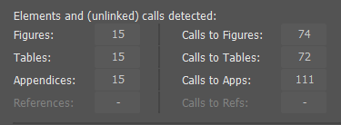
Remarque : pour rafraîchir les informations affichées dans ce bloc, cliquez sur le bouton de choix du langage (par ex., cliquez sur « English »).
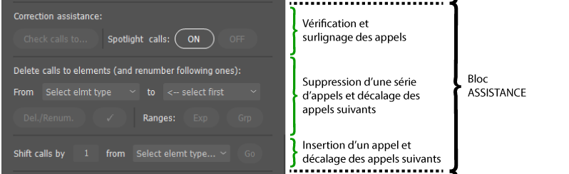
Ce bloc met à votre disposition une série d’outils vous permettant de :
surligner automatiquement les appels aux éléments dans le texte (Spotlight calls) ;
vérifier les appels aux éléments présents dans le texte (Check calls) ;
étendre et regrouper les plages d’appels (Ranges) ;
supprimer une série d’appels dans le texte (quand un ou plusieurs éléments ont été supprimés) et décaler les appels suivants (Delete calls) ;
insérer un appel dans le texte (quand un ou plusieurs éléments ont été insérés), et décaler les appels suivants (Shit calls).
Les modifications appliquées par le programme le sont en deux temps : les suppressions apparaissent d’abord barrées de rouge, et les ajouts soulignés de vert ; un clic sur le bouton de validation (coche) permet ensuite d’appliquer les corrections définitivement. Il est toujours possible de revenir en arrière en utilisant les boutons « Undo » et « Redo ».
Remarque : Pour que les boutons s’activent, il faut d’abord sélectionner un ou plusieurs type(s) d’élément(s) (Figures, Tables ou Appendices).
Cette fonction ne nécessite pas de sélectionner d’abord un type d’élément, ni une langue, et s’applique à tous les appels présents dans le texte :
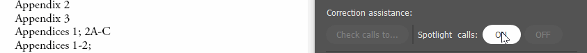
Cliquez sur « ON » pour « allumer » les appels dans le texte ;
Cliquez sur « OFF » pour les éteindre.
Les couleurs suivantes sont appliquées (les couleurs sont créées par le programme) :
Les « Figures » sont surlignés en rouge (Figs 1A, C; 3B; 5) ;
Les « Appendices » (en anglais) sont colorés en rose (Appendices 1; 2A-C) ;
Les « Annexes » (en français) sont colorés en fuchsia (Annexes 5 ;10 ;12-14) ;
Les « Tables » (en anglais) sont colorés en vert foncé (Tables 1-3) ;
Les « Tableaux » (en français) sont colorés en vert clair (Tableau 1).
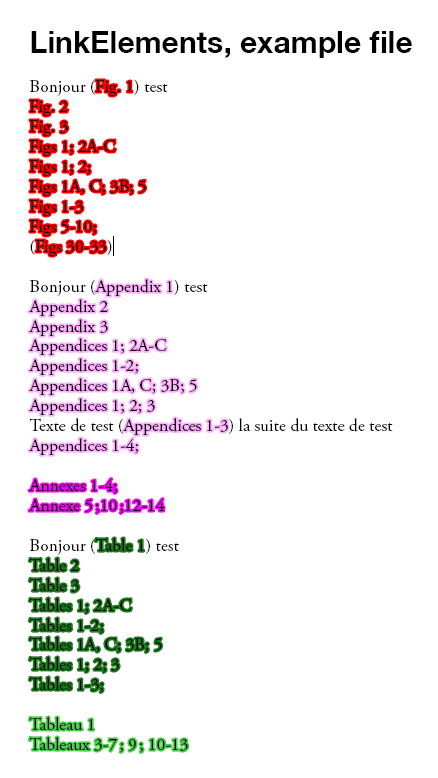
Cette fonction permet de vérifier la présence des appels à un ou plusieurs type(s) d’élément(s) (Figures ET/OU Tables ET/OU Appendices).
Il faut d’abord sélectionner au moins un type d’élément ; il est possible d’en sélectionner plusieurs, et de vérifier ainsi les appels à plusieurs types d’éléments en une seule passe :
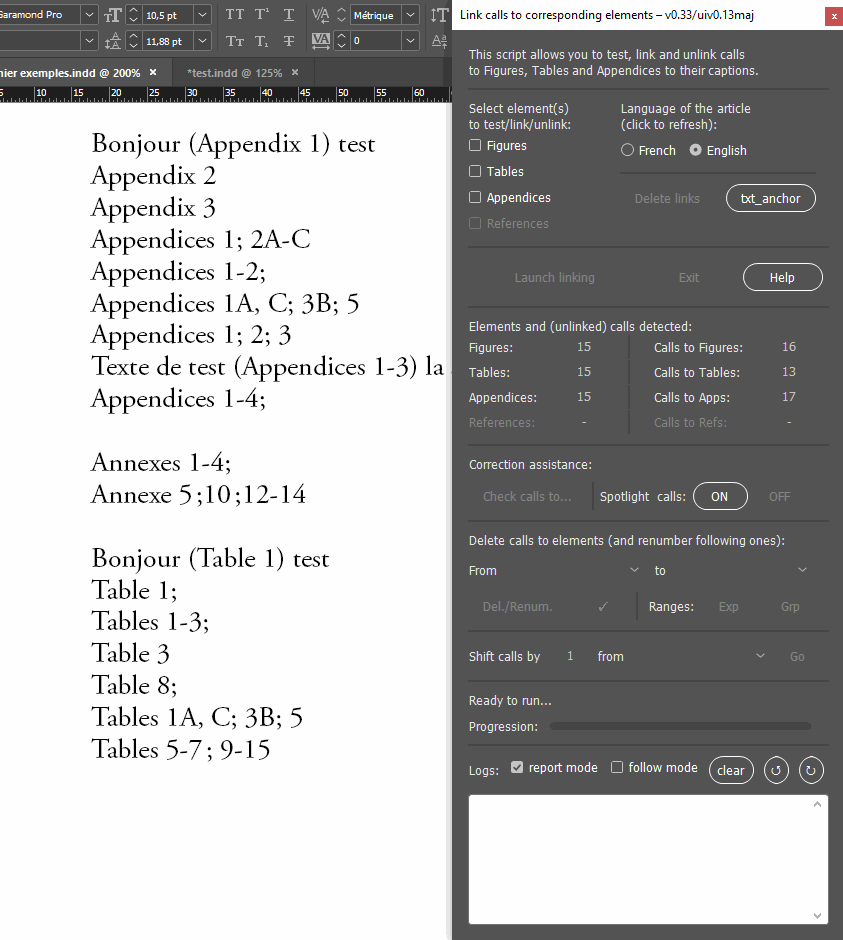
Le résultat s’affiche dans la fenêtre « Logs » :
------- Result -------
Table
2->[call only found in a range]
Table 6->[call only found
in a range]
Table 10->[call only found in a range]
Table
11->[call only found in a range]
Table 12->[call only
found in a range]
Table 13->[call only found in a
range]
Table 14->[call only found in a range]
No call to Tables 4, add calls before linking them!
End of checking process for Tables
-------------------------
Les appels non explicites aux éléments sont signalés (par ex., le « Table 2 » dans l’exemple ci-dessus) ;
Les appels absents sont signalés (Table 4 dans le résultat ci-dessus).
Le programme permet d’étendre ou de regrouper les plages d’appel à un type d’élément (un seul type d’élément doit donc être sélectionné) :

Remarque : comme pour les autres fonctionnalités du programme, l’extension ou le regroupement de plages ne fonctionne que sur les appels non encore liés (et donc, non stylés).
Le programme permet de supprimer une série continue d’appels (par ex. : Fig. 1 ou Figs 3-5), dans le cas où un ou plusieurs éléments auraient été supprimés de l’article :
Les appels aux éléments qui suivent l’élément supprimé sont renumérotés (ex. : si on supprime la Fig. 3 de l’article, le programme renuméroté les appels suivants, à partir de l’appel suivant, Fig. 4, en fonction du nombre de Figures supprimées [une seule dans notre cas] ; la Fig. 4 devient ainsi la Fig. 3, la Fig. 5 devient la Fig. 4, etc.) ;
La suppression se fait en deux temps :
les appels supprimés sont barrés de rouge et les appels décalés sont soulignés en vert lors du premier passage ;
si la suppression est validée, un clic sur le bouton « Coche » applique la transformation ;
les appels cités dans les plages sont pris en compte ;
il est possible de revenir en arrière avec les boutons « Undo » et « Redo ».
Dans la capture suivante, on supprime les appels à l’Annexe 3 (appels en anglais) ; les appels suivants sont renumérotés :
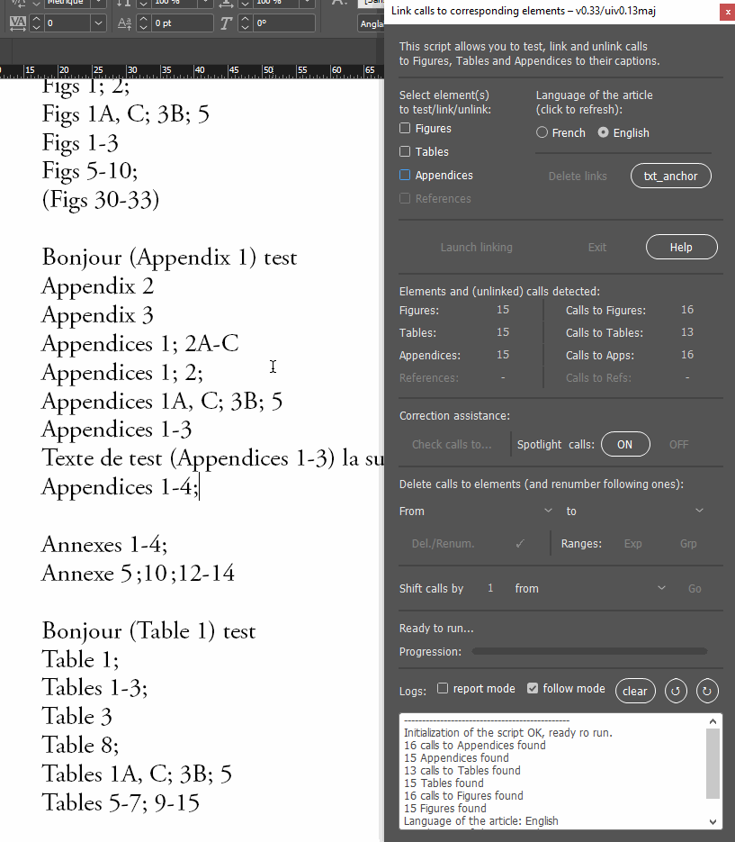
Dans la capture suivante, on supprime les appels à aux Tableaux 11 et 12 (appels en anglais) ; les appels suivants sont renumérotés :
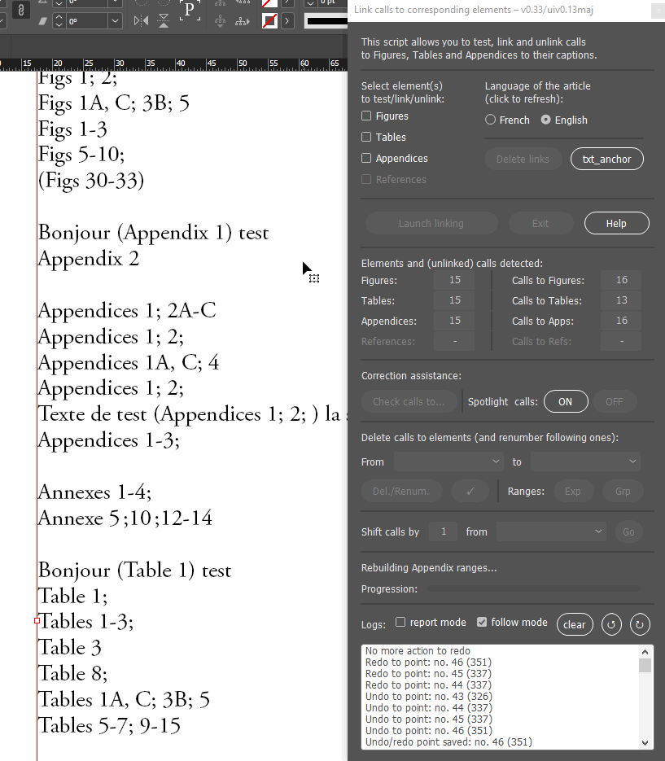
Pendant l’exécution du script, le programme demande si on veut renuméroter les appels au-delà du nombre d’éléments trouvés dans l’article (par ex., si l’article contient 15 Figures, la renumérotation va s’arrêter à 15, mais on peut « forcer » la renumérotation des éléments suivants, pour renommer un appel à la Fig. 16 en Fig. 15, Fig. 17 en Fig. 16, etc.) ;
La renumérotation implique l’ajout d’espaces insécables entre le type d’élément et le numéro d’élément, et le remplacement de séries d’espaces en une seule espace non insécable partout dans l’article ;
Une fois la renumérotation terminée, il est important de lisser le texte de l’article « à la main » (gestion des pluriels [ex. : Figs en Fig.] et des éléments vides [ex. : (Figs )] , qui apparaissent en bleu à la fin de l’exécution de la fonction).
Remarque : si une série non continue d’appels doivent être supprimés (par ex. appels aux Figs 3 et 5), la suppression devra se faire en plusieurs passages (supprimer d’abord les appels à la Fig. 3 et ensuite les appels à la Fig. 5).
De la même manière, le programme permet d’insérer un appel et de décaler les appels suivants. Par exemple :
si une figure, la « Fig. 3 » a été ajoutée, tous les appels aux Figures 3 à X doivent être décalés de 1 ; les appels à la Fig. 3 deviennent des appels la Fig. 4, les appels à la Fig. 4 deviennent des appels à la Fig. 5, etc.
si on ajoute plusieurs figures à la fois, par exemple les Figs 3, 4 et 5, les appels à partir de la Figure 3 doivent être décalés de 3 ; les appels à la Fig. 3 deviennent des appels à la Fig. 6, les appels à la Fig. 4 deviennent des appels à la Fig. 7, etc.
Dans la capture suivante, on décale de 2 les appels aux annexes (appels en anglais) à partir de l’Annexe 3 ; les appels suivants sont renumérotés :
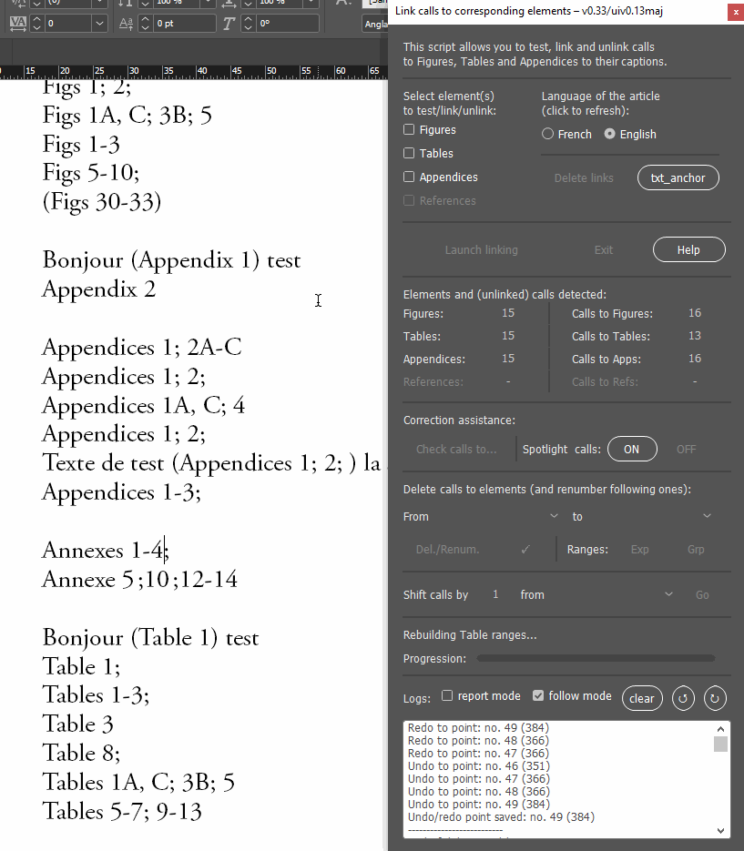
Remarque : en utilisant les fonctions de suppression et d’insertion d’appels, il est possible de déplacer une Figure.
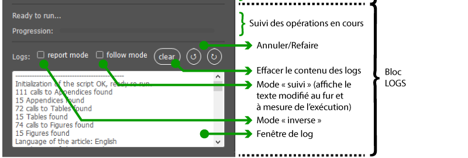
Ce bloc vous permet de suivre les opérations en cours, et de récupérer éventuellement le contenu des opérations appliquées via la fenêtre « Logs ».
Il permet de :
report mode : inverse l’ordre d’apparition des messages dans la fenêtre « Logs » (par défaut, les derniers messages apparaissent en haut, avec un ordre de lecture inversé, de bas en haut) ;
follow mode : permet de suivre les opérations appliquées sur l’article au fur et à mesure de application (le script met le focus sur l’élément transformé avant chaque modification) ; l’exécution du programme peut être ralentie par l’activation de ce mode ;
clear : permet de vider la fenêtre de logs ;
Boutons Annuler/Refaire : permet de remonter dans les opérations effectuées, en annulant/réappliquant les dernières modifications appliquées par le programme.
Documentation rédigé par Emmanuel Côtez (emmanuel.cotez@mnhn.fr) — Documentation du script « linkElements » version 1 (décembre 2022)
Fin du fichier